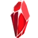
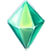
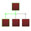
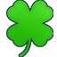
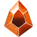
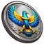
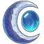
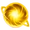
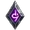
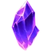

| Gold | |
|---|---|
| Gold is one of the main currencies in the game. It is obtained by beating enemies on the battlefield. Gold gain can be increased by farming a higher stage, by the raining gold upgrade, by increasing firestone effect, by the Vermilion guardian aura and by the gold earnings achievement bonus.
Gold is used to buy gold upgrades in the battlefield menu and to determine the amount of firestones you get when you empower the Temple of Eternals. | |
| Firestones | |
|---|---|
 |
Firestones are the second main currency and give the game its name. They are obtained by empowering the Temple of Eternals. Firestone gain can be increased with the firestone finder research.
Firestones increase your gold gain. |
| Gems | |
|---|---|

|
Gems are the premium currency in the game. They can be bought with platform currency in the shop, in Extreme Value Bundles and in Special Offers. Free gems can be also obtained from daily rewards, from a weekly quest and from card draws.
Gems can be used to buy gear chests in the Gear Chest Shop or inventory items and other currencies in the Item Shop. |
| Void Crystals | |
|---|---|
 |
Void crystals are obtained by duplicate gear drops. They can also be bought with platform currency in Special Offers.
Void crystals are used in the Hall of Heroes to upgrade the gear of your heroes. |
| Meteorites | |
|---|---|

|
Meteorites are automatically gathered by miners with a rate of one meteorite per minute. They can also be gained from daily rewards, from daily quests and from card draws. They can also be bought with platform currency in Special Offers. Meteorite gain can be increased with the meteorite hunter talent and upgrade as well as the coworkers talent.
Meteorites are used for meteorite research in the Library and to unlock gear tiers 2 and 3. |
| Talent Points | |
|---|---|
 |
With every character level you will earn one talent point.
Talent points are used for talent upgrades in the Talent Tree. |
| Honor | |
|---|---|

|
Honor is obtained by running all kinds of missions, from daily rewards, from daily quests and from card draws. It can also be bought with platform currency in Extreme Value Bundles and Special Offers.
Honor determines your rank and is multiplied with your honor effect to give an all main attributes bonus. |
| Strange Dust | |
|---|---|

|
Strange dust is obtained from running scout missions, from daily rewards, from daily quests and from card draws. It can also be bought with gems in the Item Shop and with platform currency in Extreme Value Bundles.
Strange dust is used in the Magic Quarter for guardian enlightenment and guardian evolution. It is also used in the Alchemist's experiments and transmutes. It is also used to unlock Soulstones tier 2. |
| Glory | |
|---|---|

|
Glory is obtained by completing daily and weekly challenges from the battle pass. It is required to claim chests or currencies and to get temporary buffs from the battle pass rewards. |
| Contracts | |
|---|---|

|
Contracts are obtained from the tavern, the battle pass and from mini-events. They are required to hire mercenaries in the Pirate Ship. They are also used in Hall of Heroes to upgrade heroes rarity. |
| Guild Coins | |
|---|---|

|
Guild coins unlock with character level 10. They are used to upgrade your guild's Tree of Life and can be obtained by doing guild Expeditions or by buying one of the value bundles in the Guild Shop. |
| Expedition Tokens | |
|---|---|

|
Expedition tokens unlock with character level 10. They are used to upgrade your personal Tree of Life and level up your War Machines. You can also use them to purchase Pickaxes, Emblems of Valor, and Jewel Chests in the Guild Shop. They can be obtained by doing guild Expeditions or by buying one of the value bundles in the Guild Shop. |
| Beer | |
|---|---|

|
Beer unlocks at character level 15. Beers drop with a rate of 1 beer per 28.8 seconds on the battlefield (yielding 3000 beers per day). They can also be obtained as a possible reward from drawing cards in the Tavern. The number of beers dropped can be increased with the cheers guild and campaign perks as well as the twin dragons talent.
Beer is used to buy game tokens in the Tavern Market. |
| Game Tokens | |
|---|---|

|
Game tokens unlock at character level 15. They can be bought with beer or gems in the Tavern Market.
Game tokens are used to draw cards in the Tavern. |
| Luck | |
|---|---|
 |
Luck unlocks at character level 15. Luck is obtained by drawing cards in the Tavern. The amount of luck gained depends on the type of reward and the number of drawn items.
Luck is used to determine your luck level, which gives permanent bonuses to attributes, gold gain and meteorite gain. Your luck level also determines for sacred cards and some other rewards the number of items gained from card draws. |
| Golden Keys | |
|---|---|

|
Golden keys unlock at character level 15. They are obtained as a possible reward from drawing cards in the Tavern.
Golden keys are used to buy amulets in the shop and to enchant ancient artifacts in the Tavern. |
| Prestige Tokens | |
|---|---|

|
Prestige tokens unlock at luck level 2. They are obtained as a possible reward from drawing cards in the Tavern.
Prestige tokens are used for epic prestige in the Temple of Eternals. |
| Exotic Coins | |
|---|---|

|
Exotic coins unlock with character level 30. They are obtained by selling unused inventory items to the Exotic Merchant and from card draws. They can also be bought with platform currency in Extreme Value Bundles.
Exotic coins are used to buy exotic upgrades of the Exotic Merchant. |
| Arcane Crystals | |
|---|---|

|
Arcane crystals unlock at character level 50. They are obtained from mining the Arcane Crystal in the Guild screen and are sent to you via the in-game mailbox. |
| Ethereal Shards | |
|---|---|
 |
Ethereal shards unlock with character level 50. They are obtained by duplicate jewel drops.
Ethereal shards are used in the Hall of Heroes to upgrade the jewels of your heroes. |
| Blueprints | |
|---|---|

|
Blueprints unlock with character level 50. They are obtained by beating campaign missions or by claiming campaign loots, as well as from the daily liberation quest. They can also be bought with expedition tokens in the Guild Shop.
Blueprints are used to upgrade the attributes of War Machines. |
| Tools | |
|---|---|

|
Tools unlock with character level 50. They can be claimed from the engineer or be bought with expedition tokens in the Guild Shop.
Tools are used to increase the rarity of War Machines. |
| Emblems of Valor | |
|---|---|

|
Emblems of valor unlock with character level 50. They are obtained by beating campaign missions and liberation missions or by claiming campaign loots. They can also be bought with expedition tokens in the Guild Shop.
Emblems of valor are used to buy jewel chests in the Emblem Market of the Exotic Merchant. |
| Elixirs of Life | |
|---|---|

|
Elixirs of life unlock at character level 50 and at 70 campaign stars. They obtained by beating dungeon missions and can be bought with expedition tokens in the Guild Shop.
Elixirs of life are used to transmute jewel chests with the Alchemist. |
| Emblems of Courage | |
|---|---|

|
Emblems of courage unlock at character level 65 and are obtained by running all kinds of missions and from card draws. They can also be bought with gems in the Item Shop.
Emblems of courage are used to buy gear chests in the Emblem Market of the Exotic Merchant. |
| Pickaxes | |
|---|---|

|
Pickaxes unlock at character level 50. The are obtained by free claims or in exchange for expedition tokens in the Guild Shop.
Pickaxes are used to mine the Arcane Crystal in the Guild screen. |
| Noble's token | |
|---|---|
 |
Noble's token unlocks at character level 60. You gain 10 noble's token for free every day (up to a cap of 10).
Noble's token is used to play the Scarab's game. |
| Pharaoh's Tokens | |
|---|---|

|
Pharaoh's tokens unlock at character level 60. They can be bought with expedition tokens in the Scarab's Shop.
Pharaoh's tokens are used to play the Scarab's game. |
| Ancient Coins | |
|---|---|

|
Ancient coins unlock at character level 60. They are received by playing Scarab's game
Ancient coins are used to open chests in the Pharaoh's vault. |
| Scarabs | |
|---|---|

|
Scarabs unlock at character level 60. Scarabs are obtained by opening chests in the Pharaoh's vault. The amount of scarabs gained depends on the type of reward and the number of received items.
Scarabs are used to determine your scarab level, which gives permanent bonuses to 8 different attributes. Your scarab level also determines for lost inscriptions and some other rewards the number of items gained from opened chest. |
| Soul Embers | |
|---|---|

|
Soul embers unlock at character level 60. They are obtained as a possible reward from Pharaoh's vault.
Soul embers are used to level up Beasts in the Scarab's Game. . |
| Cobra Keys | |
|---|---|

|
Cobra keys unlock at character level 60. They are obtained as a possible reward from drawing cards in the Tavern.
Cobra keys are used to enchant Beasts in the Scarab's Game. |
| Twilight Hourglasses | |
|---|---|

|
Twilight hourglasses unlock at character level 60. They are obtained as a possible reward from Pharaoh's vault.
Twilight hourglasses are used to level up ancient artifacts in the Tavern. |
| Moon Stones | |
|---|---|
 |
Moon stones unlock at character level 100. You gain 10 moon stones for free every day (up to a cap of 10). Moon stones are used to attack the dark gods in the Chaos Rift. |
| Eclipse Stones | |
|---|---|

|
Eclipse stones unlock at character level 100. You can buy them in the Chaos Rift Shop. You can also obtain them in the Pharaoh's vault. Eclipse stones are used to attack the dark gods when your moon stones run out. |
| Orbs of Light | |
|---|---|
 |
Orbs of Light unlock at character level 100. You can receive them as reward when hitting a dark god in the Chaos Rift. Orbs of Light are used to upgrade the holy damage of your guardians. |
| Dark Runes | |
|---|---|
 |
Dark Runes unlock at character level 100. You can receive them as reward when hitting a dark god in the Chaos Rift. Dark Runes are used to buy tomes of power in the Chaos Rift Shop. |
| Dragon Blood | |
|---|---|

|
Dragon blood unlocks at character level 120. It is obtained by running dragon missions and from card draws and can be bought with gems from the Item Shop.
Dragon blood is used in the Alchemist's experiments and transmutes. |
| Soul Shards | |
|---|---|
 |
Soul shards unlock with character level 200. They are obtained by duplicate soulstone drops.
Soul shards are used in the Hall of Heroes to upgrade the soulstones of your heroes. |
| Virtue | |
|---|---|

|
Virtue unlocks at character level 200. Virtue is obtained by buying blessings in the Oracle. Virtue can also be bought in the Oracle Shop and in Special Offers.
Virtue is used to determine your oracle level, which gives you higher ritual gains and a permanent bonus to your firestone gain. |
| Emblems of Brotherhood | |
|---|---|

|
Emblems of brotherhood unlock at character level 200 and are obtained by performing rituals in the Oracle. They are also obtained in the Pharaoh's vault.
Emblems of brotherhood are used to buy celestial chests in the Emblem Market of the Exotic Merchant. |
| Star Essence | |
|---|---|

|
Star essence unlocks at character level 200 and is obtained by performing rituals in the Oracle.It is also obtainable in the Pharaoh's vault.
Star essence is used to transmute celestial chests with the Alchemist. |